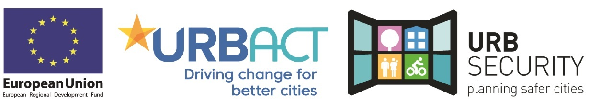

URBSECURITY From planning to urban security
Wat?
Samen-leven in diversiteit is een beleidstopic voor stad Mechelen als één van de vier meest multiculturele steden van Vlaanderen. Met dit project richten we ons op het verbeteren en versnellen van het integratieproces van inburgeraars. Inburgeraars kiezen uit 3 trajecten nl. een buddywerking, een toeleidingtraject in het vrijwilligerswerk of een kennismakingstraject in een buurtwerking of lokale dienstencentrum. Er wordt rekening gehouden met de vaardigheden, de kennis en de competenties van de inburgeraars in de ontwikkeling van dit aanbod.
Wie?
Het netwerk wordt geleid door de stad Leiria (PT) in samenwerking met de volgende steden/regio’s: Madrid (SP), Parma (IT), Longford (IE), Mechelen (BE), Pella (GR), Michalovce (SK), Szabolcs 05 Association of Municipalities (HU) en de regio Romagna Faentina (IT).
Hoe?
UrbSecurity zal lokale strategieën onderzoeken en nieuwe methodieken ontwikkelen om het samenleven te bevorderen en het veiligheidsgevoel te verbeteren. Het hoofddoel van dit netwerk is om samen een actieplan op te stellen met aandacht voor duurzaamheid en economische ontwikkeling in een groeiende stad.
Budget
Totaal projectbudget: € 748.875,55 Bijdrage URBACT: € 585.844,22 Budget Stad Mechelen: € 66.340 Bijdrage URBACT: € 46.438 Looptijd: 02/09/2019 - 07/08/2022